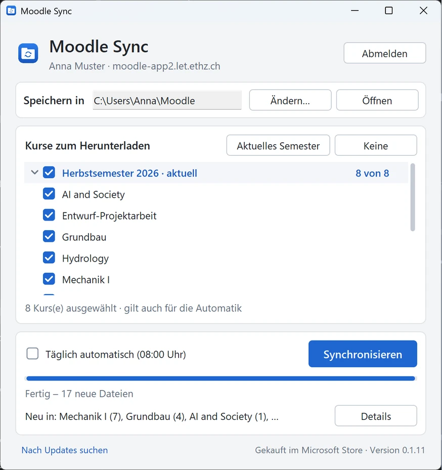

Deine Moodle-Dateien. Automatisch auf deinem Computer.
Moodle Sync lädt die Folien, Übungen und Skripte all deiner Kurse herunter – sauber sortiert nach Semester, Kurs und Abschnitt. Nie mehr jede Woche durch alle Kurse klicken.
Einmal kaufen, kein Abo: CHF 5. Für das Moodle der ETH Zürich voreingestellt.

Was Moodle Sync für dich macht
Alles an einem Ort
Dateien, Textseiten und Forumsbeiträge landen in einem Ordner auf deinem Computer – geordnet wie in Moodle.
Jeden Tag von selbst
Mit «Täglich automatisch» holt die App neue Dateien jeden Morgen und sagt dir, was neu ist.
Deine Notizen sind sicher
Bearbeitete Dateien werden nie überschrieben. Dein Passwort sieht die App nie, deine Dateien bleiben bei dir.
So installierst du Moodle Sync auf dem Mac
Dauert etwa drei Minuten. Du brauchst einen Mac mit Apple-Chip (M1 oder neuer) und einen Lizenzschlüssel.
-
In den Ordner «Programme» ziehen
Öffne die heruntergeladene Datei Moodle-Sync-….dmg mit einem Doppelklick. Es erscheint ein Fenster: Ziehe Moodle Sync auf den Ordner Programme daneben.
-
Moodle Sync öffnen – macOS hält die App zuerst an
Öffne den Ordner Programme und doppelklicke auf Moodle Sync. macOS meldet, es könne die App nicht überprüfen. Das ist normal: Die App ist nicht bei Apple registriert. Klicke auf Fertig.
Skizze – so ähnlich sieht die Meldung aus.
-
In den Einstellungen erlauben
Apple-Menü (oben links)→Systemeinstellungen→Datenschutz & Sicherheit
Scrolle rechts ganz nach unten bis zum Abschnitt Sicherheit. Dort steht «„Moodle Sync“ wurde blockiert …». Klicke daneben auf Dennoch öffnen.
Skizze – der Knopf steht ganz unten bei «Sicherheit».
Kein Knopf zu sehen? Er erscheint nur etwa eine Stunde lang nach dem Öffnungsversuch. Öffne Moodle Sync einfach nochmals, klicke auf «Fertig» und schau gleich danach in den Einstellungen nach. -
Bestätigen
macOS fragt nochmals nach: Klicke auf Dennoch öffnen und bestätige mit deinem Passwort oder Touch ID. Das musst du nur dieses eine Mal machen – ab jetzt startet Moodle Sync ganz normal.
-
Loslegen
- Füge deinen Lizenzschlüssel ein – die ganze Nachricht geht auch – und klicke auf Aktivieren.
- Klicke auf Im Browser anmelden und melde dich wie gewohnt bei Moodle an. Fragt der Browser, ob er Moodle Sync öffnen darf: Erlauben.
- Kurse anhaken und Synchronisieren. Mit Täglich automatisch kommen neue Dateien jeden Morgen von selbst.
Lizenz für den Mac
- Einmal bezahlen, kein Abo
- Bezahlung per TWINT
- Ein Schlüssel gilt für einen Mac, Updates inklusive
Schreib mir kurz – du bekommst die TWINT-Angaben und nach der Zahlung deinen Schlüssel.
Lizenz anfragenFragen
Welche Hochschulen funktionieren?
Voreingestellt ist das Moodle der ETH Zürich. Andere Hochschulen funktionieren, wenn ihr Moodle die Anmeldung über die offizielle Moodle-App erlaubt – die Adresse gibst du beim Anmelden ein.
«Dieser Schlüssel ist schon auf einem anderen Gerät aktiv»
Ein Schlüssel funktioniert auf genau einem Mac. Für einen neuen Computer schreib mir kurz, dann gebe ich ihn frei.
Die tägliche Automatik läuft nicht
Liegt dein Moodle-Ordner in «Dokumente» oder auf dem Schreibtisch, braucht Moodle Sync eine Freigabe: Systemeinstellungen → Datenschutz & Sicherheit → Festplattenvollzugriff → Moodle Sync einschalten.
Wie bekomme ich Updates?
In Moodle Sync unten auf «Nach Updates suchen» klicken. Gibt es eine neue Version, oben auf «Jetzt aktualisieren» – Lizenz und Einstellungen bleiben erhalten. Unter Windows kommen Updates automatisch über den Microsoft Store.
Geht es auch auf einem Mac mit Intel-Prozessor?
Leider nein, Moodle Sync läuft nur auf Macs mit Apple-Chip (M1 oder neuer) ab macOS 11.
Ist das eine offizielle App von Moodle?
Nein. Moodle Sync ist ein unabhängiges Projekt von Studierenden für Studierende. «Moodle» ist eine eingetragene Marke von Moodle Pty Ltd.